The "Resistor IEC System" is a standardized method established by the International Electrotechnical Commission (IEC) for categorizing resistors based on their nominal resistance values, tolerance, and power ratings. It assigns codes to represent these characteristics, making it easier to identify and select resistors for electronic applications.
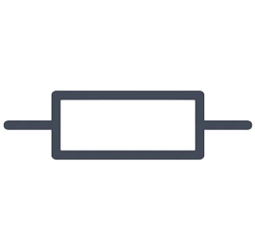
The NEMA (National Electrical Manufacturers Association) system for resistors is a method of representing resistor values and tolerances using a three-digit code. In this system, the first two digits represent the significant figures of the resistance value, and the third digit represents the multiplier. Additionally, a letter code is used to indicate the tolerance of the resistor. For example, a resistor labeled "472J" indicates a resistance value of 47 x 10^2 ohms (or 4700 ohms) with a tolerance of ±5%.
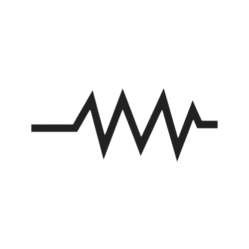
An inductor is a passive electronic component that stores energy in a magnetic field when an electric current flows through it. It is characterized by its inductance, measured in henries (H). Inductors are commonly used in electronic circuits for various purposes, including filtering signals, energy storage, and impedance matching. They consist of a coil of wire wound around a core, typically made of ferromagnetic material, which enhances the inductance.
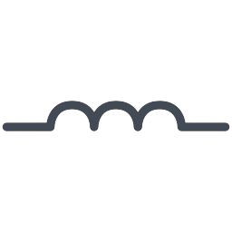
A capacitor is a passive electronic component that stores and releases electrical energy in an electric field. It consists of two conductive plates separated by an insulating material called a dielectric. When a voltage is applied across the plates, electric charge accumulates on them, creating an electric field between them. This field stores energy, allowing the capacitor to store electrical charge. Capacitors are widely used in electronic circuits for various purposes, including energy storage, filtering, coupling, and timing. They are characterized by their capacitance, measured in farads (F), and can vary widely in size and construction depending on their intended application.
In the realm of technology, a "switch" typically refers to a network switch, which is a device used to connect multiple computers or other devices within a local area network (LAN). It operates at the data link layer (Layer 2) of the OSI model and uses MAC addresses to forward data to its intended destination. Switches are essential for creating networks where multiple devices need to communicate efficiently and securely.
"Changeover" typically refers to a type of switch or relay that allows for the transfer of an electrical connection or signal from one circuit or component to another. It is often used in applications where switching between two different power sources or circuits is necessary. For example, a changeover switch might be used in a backup power system to seamlessly switch between mains power and a backup generator during a power outage. In electronics, a changeover relay or switch can also be used to alternate between different signal paths or modes of operation in a circuit..
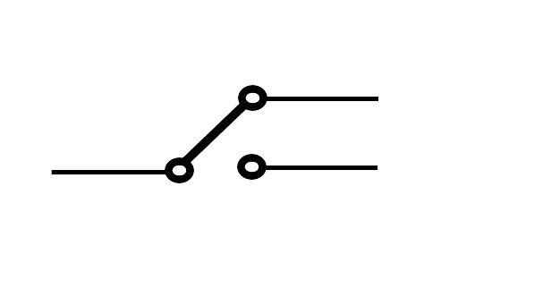
A pushbutton, also known simply as a button or a push switch, is a type of switch that is actuated by pushing it. It typically consists of a movable contact or button that, when pressed, makes or breaks an electrical connection. Pushbuttons are commonly used in electronic devices and control panels for functions such as turning devices on and off, triggering actions, or selecting options. They come in various shapes, sizes, and types, including momentary and latching varieties, and can be found in applications ranging from simple electronic gadgets to complex industrial control systems.
A male plug IEC is a standardized electrical connector with pins designed to be inserted into a female IEC socket. It's commonly used for power cords and cables in various electronic devices, adhering to international standards set by the International Electrotechnical Commission (IEC).
A male plug NEMA is a standardized electrical connector designed to fit into a corresponding female NEMA receptacle. NEMA, or the National Electrical Manufacturers Association, sets standards for electrical devices in the United States. These plugs are used to connect electrical equipment and appliances to power sources, with different configurations denoted by specific NEMA numbers indicating voltage, current capacity, and grounding requirements.
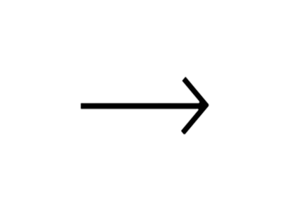
A female plug in the IEC (International Electrotechnical Commission) standard typically refers to a receptacle designed to receive a male connector. The IEC standardizes various electrical connectors used in power distribution, equipment connection, and data communication. Female plugs conforming to IEC standards are commonly found in electrical devices, computer equipment, and audiovisual systems. They ensure compatibility, safety, and reliability in international applications where standardized connectors are essential.

In the NEMA system, a "female plug" typically refers to a specific type of electrical connector designed to receive the prongs of a corresponding male plug. NEMA (National Electrical Manufacturers Association) standards define various types of electrical plugs and receptacles used in the United States. The female plug is part of a receptacle, which is the electrical outlet where devices can be plugged in. NEMA specifies different configurations and ratings for these plugs and receptacles to ensure compatibility, safety, and performance in electrical installations.
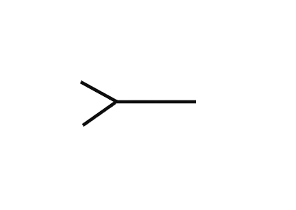
A fuse is a safety device used in electrical circuits to protect against overcurrent conditions. It consists of a thin strip or wire made of a material that melts when exposed to excessive current. When the current passing through the fuse exceeds its rated value, the strip or wire melts, breaking the circuit and interrupting the flow of electricity. This helps prevent damage to the circuit and connected devices, as well as the risk of fire or electrical hazards. Fuses are designed to be replaceable, providing a simple and effective means of protecting electrical systems.
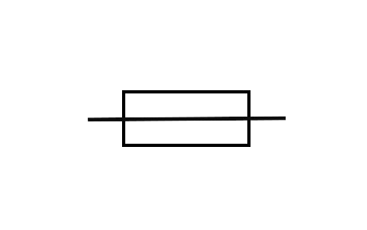
An electric line, also known as an electrical line or power line, is a physical structure that carries electrical energy from one point to another. These lines typically consist of conductors, such as wires or cables, supported by poles, towers, or other structures. Electric lines are used to transmit electricity over long distances from power plants to distribution centers, as well as to deliver electricity to homes, businesses, and other facilities. They play a critical role in the functioning of electrical grids, providing the infrastructure necessary for the distribution and delivery of power to end-users.
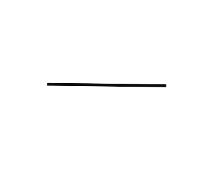
Ground in electricity is a reference point connected to the Earth, ensuring safety, stability, and noise reduction in electrical systems. It helps divert excess current, stabilizes voltage, and provides a path for lightning strikes.
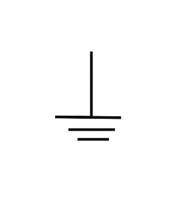
A diode is an electronic component that allows current to flow in one direction while blocking it in the opposite direction. It's like an electrical valve, permitting current flow in only one direction in a circuit.

A DIAC, or diode alternating current, is a type of semiconductor device that conducts current in both directions when triggered. It's often used in conjunction with TRIACs for controlling alternating current. Essentially, a DIAC is a bidirectional trigger diode that can switch on when the voltage across it reaches a certain threshold in either direction. This makes it useful in applications like phase control and triggering of thyristors in dimmer switches, motor speed controls, and light dimming circuits.

A thyristor is a semiconductor device that acts as a switch, allowing current to flow when triggered and remaining conducting until the current drops below a certain threshold. It can handle high currents and voltages and is commonly used in various electronic circuits for controlling power. Thyristors are often employed in applications requiring precise control of electrical power, such as motor drives, lighting control, voltage regulation, and inverter circuits. They are also widely used in devices like silicon-controlled rectifiers (SCRs), TRIACs, and gate turn-off thyristors (GTOs).
A TRIAC, or Triode for Alternating Current, is a type of semiconductor device that can control the flow of alternating current (AC) in both directions. It acts as a switch that can be triggered to conduct current when a small control voltage is applied to its gate terminal. Once triggered, the TRIAC remains conducting until the current passing through it falls below a certain threshold. TRIACs are commonly used in AC power control applications, such as dimmer switches for lighting, motor speed control, and heating control systems. They provide efficient and precise control over AC power by varying the phase angle of the current waveform.
Integrated circuit (IC) chips are tiny electronic circuits packed with thousands to billions of components. They power everything from computers to smartphones, making electronics smaller, faster, and more efficient.
An amplifier is an electronic device that increases the amplitude or strength of a signal. It takes a weak input signal and boosts it to a higher level, typically providing a larger output signal with the same waveform as the input. Amplifiers are used in various applications, such as audio systems, radio communication, and instrumentation, to enhance signals for transmission, processing, or analysis. They come in different types, including operational amplifiers (op-amps), audio amplifiers, RF amplifiers, and power amplifiers, each designed for specific purposes and operating conditions..
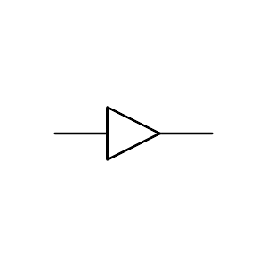
An electric generator is a device that converts mechanical energy into electrical energy. It works on the principle of electromagnetic induction, where a conductor moving through a magnetic field induces an electric current in the conductor. Electric generators are commonly used in power plants to produce electricity on a large scale. They can be driven by various sources of mechanical energy, such as steam turbines, water turbines, wind turbines, or internal combustion engines. In addition to large-scale power generation, generators are also used in smaller applications such as portable generators for backup power during outages, and in automotive alternators for charging batteries and powering electrical systems in vehicles.

A battery is a device that converts chemical energy into electrical energy. It consists of one or more electrochemical cells and is used to power various devices, from small electronics to vehicles.

An ammeter is a device used to measure the flow of electrical current in a circuit. It is typically connected in series with the circuit and displays the current passing through it in units of amperes (amps). Ammeters are essential tools for diagnosing electrical problems, monitoring the performance of electrical devices, and ensuring the safety and efficiency of electrical systems.
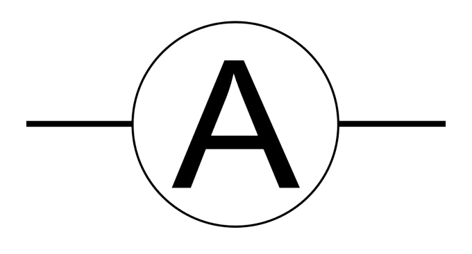
A voltmeter is a device used to measure the voltage difference between two points in an electrical circuit. It is typically connected in parallel with the circuit or component being measured and displays the voltage in units of volts. Voltmeters are essential tools for diagnosing electrical problems, determining the voltage levels in circuits, and ensuring the proper operation of electrical systems.

An ohmmeter is a device used to measure electrical resistance in a circuit or component. It applies a known voltage to the circuit and measures the resulting current, then calculates the resistance using Ohm's Law (R = V/I). Ohmmeters are useful for testing the integrity of electrical connections, determining the resistance of resistors, and troubleshooting electrical circuits.
A frequency meter is a device used to measure the frequency of an electrical signal. It typically operates by counting the number of cycles of the signal within a specified time interval and then displaying this count as the frequency in hertz (Hz) or kilohertz (kHz). Frequency meters are commonly used in various applications, including telecommunications, power systems, and audio equipment, to monitor and analyze the frequency of signals to ensure proper operation and performance.
A wattmeter is a device used to measure the electrical power in a circuit. It measures the product of voltage and current (watts) and provides readings in units of watts or kilowatts. Wattmeters are commonly used in electrical systems to monitor power consumption, determine the efficiency of electrical devices, and ensure the proper operation of power distribution systems. They are essential tools for optimizing energy usage and managing electrical loads effectively.

An electric clock is a timekeeping device powered by electricity rather than by mechanical means like springs or weights. Electric clocks typically use an electric motor to drive the gears and hands of the clock, and they are powered either by batteries or by an electrical outlet. Electric clocks can come in various forms, including analog clocks with traditional hour and minute hands, digital clocks with numerical displays, and more advanced designs with additional features such as alarms, timers, and synchronization with external time sources like atomic clocks or the internet. They are commonly found in homes, offices, and public spaces for accurately keeping track of time.
An antenna is a device used to transmit or receive radio frequency (RF) signals. It converts electrical currents into electromagnetic waves (transmitting antenna) or vice versa (receiving antenna). Antennas are commonly used in communication systems, such as radio and television broadcasting, wireless networks, radar systems, and satellite communication. They come in various shapes and sizes, depending on their intended application and operating frequency range. Antennas play a crucial role in enabling wireless communication and are essential components in modern telecommunications infrastructure.

A speaker is a transducer that converts electrical signals into sound waves. It typically consists of a diaphragm (or cone) attached to a coil of wire (voice coil) suspended in a magnetic field. When an electrical current flows through the coil, it creates a magnetic field that interacts with the magnetic field of the speaker's permanent magnet, causing the diaphragm to vibrate and produce sound waves. Speakers are commonly used in audio systems, such as radios, televisions, stereo systems, and public address systems, to reproduce sound for listening purposes. They come in various sizes and designs, including woofers for low-frequency sounds, tweeters for high-frequency sounds, and full-range speakers that reproduce a wide range of frequencies.
A microphone is a transducer that converts sound waves into electrical signals. It typically consists of a diaphragm or membrane that vibrates in response to sound waves, causing a corresponding variation in electrical voltage or current. Microphones are commonly used in various applications, such as audio recording, voice communication, and sound reinforcement systems. They come in different types, including dynamic microphones, condenser microphones, and ribbon microphones, each with its own characteristics and suitability for different purposes. Microphones are essential components in audio equipment and play a crucial role in capturing and reproducing sound accurately.
A light bulb is an electrically powered device that produces light by passing an electric current through a filament or a gas-filled tube. The electric current heats the filament or excites the gas, causing it to emit photons, which generate visible light. Light bulbs come in various types, including incandescent bulbs, fluorescent tubes, compact fluorescent lamps (CFLs), and light-emitting diode (LED) bulbs, each with its own characteristics and efficiency. Light bulbs are used for general lighting purposes in homes, offices, and public spaces, providing illumination for tasks, safety, and ambiance. They have undergone significant advancements over the years, with newer technologies like LEDs offering greater energy efficiency and longer lifespans compared to traditional incandescent bulbs.
Direct current (DC) is an electric current that flows continuously in one direction without changing polarity. It is characterized by a steady and constant flow of electric charge from the positive (+) terminal to the negative (-) terminal of a voltage source, such as a battery or a DC power supply. DC is commonly used in various applications, including electronics, telecommunications, and automotive systems. Unlike alternating current (AC), which periodically reverses direction, DC maintains a constant polarity and is often preferred for powering devices that require a stable and consistent voltage supply.
Alternating current (AC) is an electric current that periodically reverses direction, changing polarity over time. It flows in a sinusoidal waveform, with the direction of current alternating between positive and negative cycles. AC is generated by rotating machinery such as generators or alternators and is commonly used in electrical power distribution systems and household appliances. Unlike direct current (DC), which flows continuously in one direction, AC allows for efficient transmission of electricity over long distances and is easily transformed to different voltage levels using transformers. AC power is characterized by its frequency, measured in hertz (Hz), which determines the number of complete cycles per second.
Positive polarity refers to the orientation or direction of electrical charge in a circuit or component, indicating that the voltage or potential is higher at a designated positive terminal compared to a reference point or negative terminal. In a circuit, positive polarity indicates the flow of conventional current from the positive terminal to the negative terminal, representing the direction of electron flow from the negative terminal to the positive terminal (opposite to the direction of conventional current). Positive polarity is commonly used to denote the higher potential or voltage in a circuit and is essential for proper circuit analysis and component connections.
Negative polarity refers to the orientation of an electrical charge in which electrons flow from a higher potential (negative terminal) to a lower potential (positive terminal). It is the opposite of positive polarity, where electrons flow in the opposite direction. In electronic circuits, negative polarity is often represented by a minus (-) sign or indicated by a black color. It's essential in understanding the flow of electric current and determining the proper connections in circuits to ensure correct operation.

A relay is an electromechanical switch that is operated by an electrical current. It consists of a coil and a set of contacts. When an electrical current is applied to the coil, it generates a magnetic field that attracts or repels an armature, causing the contacts to either close or open. Relays are commonly used in electrical circuits to control the flow of electricity to various components or devices. They can be used for tasks such as switching high-power loads, providing electrical isolation between circuits, and implementing logic control functions. Relays come in various types, including electromechanical relays, solid-state relays, and reed relays, each suited to different applications and operating conditions.
A transformer is a device that transfers electrical energy between circuits using electromagnetic induction. It consists of coils of wire wound around a magnetic core. It steps up or steps down voltage levels depending on the ratio of turns in the coils. Transformers are vital in power distribution and various electronic devices for voltage conversion and impedance matching.
An electric motor is a device that converts electrical energy into mechanical energy. It typically consists of coils of wire (windings) placed within a magnetic field, which generates a force when an electric current flows through the windings. This force causes the motor's rotor (the rotating part) to turn, thus producing mechanical motion. Electric motors are used in a wide range of applications, from household appliances like fans and refrigerators to industrial machinery, vehicles, and robotics. They come in various types, including AC motors (such as induction motors and synchronous motors) and DC motors (such as brushed and brushless motors), each suited to different applications and operating conditions. Electric motors are essential components in modern technology, powering many devices and systems that we rely on every day.